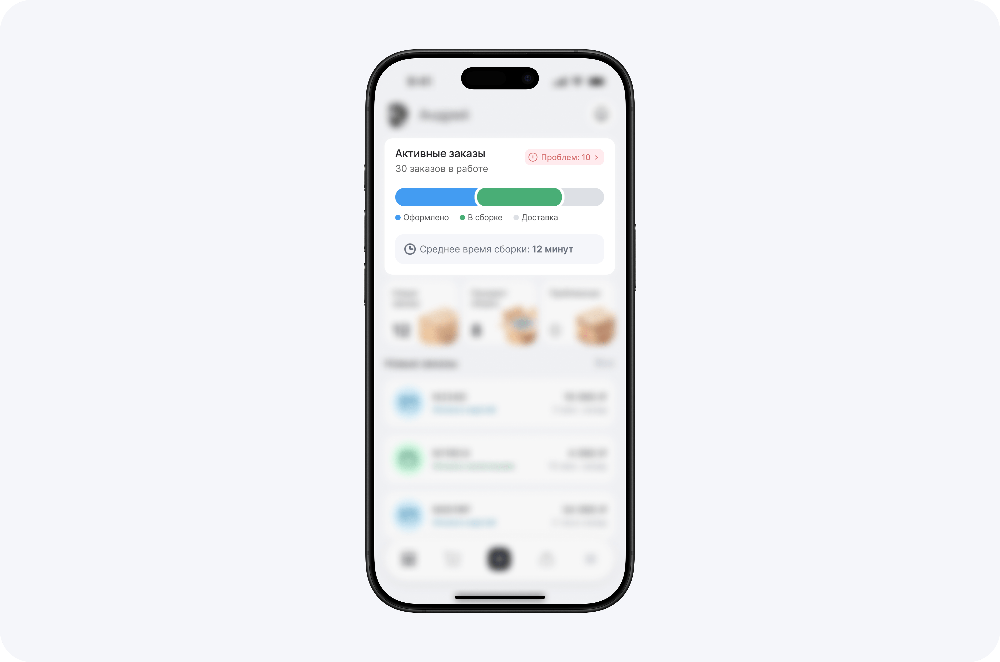
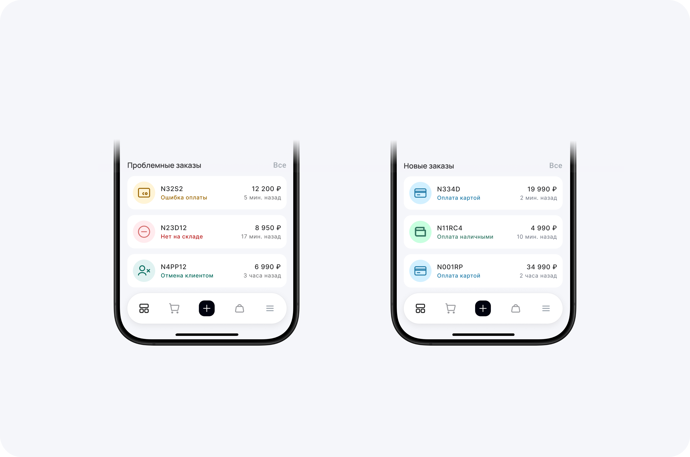
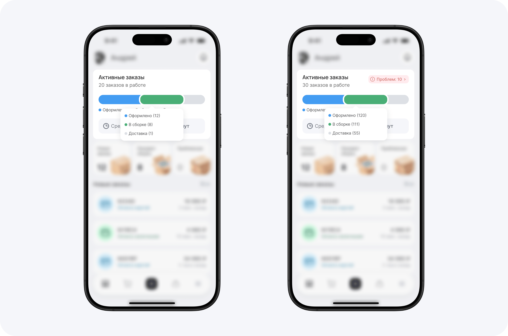
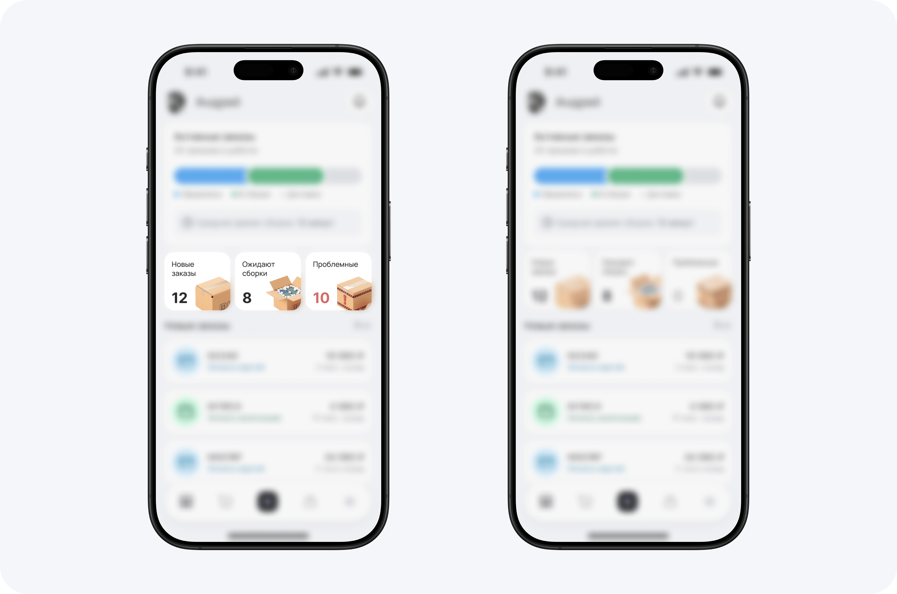

Задача: Оптимизировать операционную деятельность менеджера склада через улучшение визуальной иерархии и внедрение продуктовых метрик.
1. Проблема
Интерфейс не позволял менеджеру быстро оценивать ситуацию «здесь и сейчас». Круговые диаграммы занимали много места, но не давали понимания этапов обработки заказа, а критические ошибки терялись в общем потоке данных.
2. Подход: Jobs-to-be-Done (JTBD)
Спроектировал сценарии на основе ключевых пользовательских потребностей:
Job 1: «Когда я открываю экран, я хочу сразу видеть количество проблем, чтобы оценить объем работы»
Job 2: «Я хочу видеть причину ошибки и сумму заказа, чтобы приоритизировать дорогие задачи»
Job 3: «Когда всё идет по плану, я хочу видеть подтверждение штатной работы, чтобы снизить уровень стресса»
3. Ключевые решения
Линейный Order Journey вместо графиков

Замена круговой диаграммы на горизонтальный прогресс-бар наглядно показывает движение заказа по этапам: Оформлено → В сборке → Доставка. Это сократило время на считывание статуса системы на 30–40%.
Динамические состояния

Интерфейс подстраивается под контекст:
State: Issues. Если есть инциденты, система выводит их на первый план, используя красный акцент и детальную расшифровку ошибок.
State: Healthy. Если проблем нет, экран фокусируется на новых заказах, создавая спокойную рабочую среду.
Масштабируемость данных

Продумано поведение системы при нагрузке 100+ заказов. Интерактивная плашка (тултип) скрывает избыточные цифры, но позволяет получить детализацию по клику или тапу, сохраняя чистоту экрана.
4. Визуальная система и UX-тесты

Типографика: Связка Manrope (заголовки) и Inter (данные) обеспечивает баланс между стилем и высокой читаемостью мелких цифр.
Тест на оптическое пятно (Blur Test): Проверка подтвердила, что ключевые акценты (аналитика и кнопка «Добавить») считываются даже при расфокусированном взгляде, что критично в стрессовой рабочей среде.
5. Результат
Получен масштабируемый рабочий инструмент, который:
Сокращает время реакции на критические ошибки.
Дает прозрачность в оценке эффективности склада через KPI (среднее время сборки).
Готов к передаче в разработку с логичной системой компонентов и отступов.